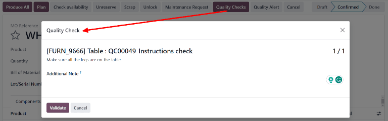

Quality checks¶
Quality checks are manual inspections conducted by employees, and are used to ensure the quality of products. In Odoo, a quality check can be conducted for a single product, or multiple products within the same inventory operation or manufacturing order.
Using a Quality Control Point (QCP), it is possible to create quality checks automatically at regular intervals. When quality checks are created by a QCP, they appear on a manufacturing or inventory order, where the employee processing the order will be prompted to complete them. For a full explanation of how to create and configure a QCP, see the documentation on quality control points.
While quality checks are most commonly created automatically by a QCP, it is also possible to manually create a single quality check. Creating a check manually is useful when an employee wants to schedule a quality check that will only occur once, or register a quality check that they conduct unprompted.
Manual quality check¶
To manually create a single quality check, navigate to , and click New. On the quality check form, begin by selecting an option from the Control per drop-down menu:
Operation requests a check for an entire operation (ex. delivery order) and all products within it.
Product requests a check for every unit of a product that is part of an operation (ex. every unit of a product within a delivery order).
Quantity requests a check for every quantity of a product that is part of an operation (ex. one check for five units of a product within a delivery order). Selecting Quantity also causes a Lot/Serial drop-down field to appear, from which can be selected a specific lot or serial number that the quality check should be conducted for.
Next, select an inventory operation from the Picking drop-down menu or a manufacturing order from the Production Order drop-down menu. This is necessary because Odoo needs to know for which operation the quality check is being conducted.
If the quality check should be assigned to a specific QCP, select it from the Control Point drop-down menu. This is useful if the quality check is being created manually, but should still be recognized as belonging to a specific QCP.
Select a quality check type from the Type drop-down field:
Instructions provides specific instructions for how to conduct the quality check.
Take a Picture requires a picture to be attached to the check before the check can be completed.
Pass - Fail is used when the product being checked must meet a certain criteria to pass the check.
Selecting Measure causes a Measure input field to appear, in which a measurement must be entered before the check can be completed.
Selecting Worksheet causes a Quality Template drop-down field to appear. Use it to select a quality worksheet that must be filled out to complete the check.
In the Team field, select the quality team that is responsible for the quality check. In the Company field, select the company that owns the product being inspected.
On the Notes tab at the bottom of the form, enter any relevant instructions in the Instructions text entry box (ex. ‘Attach a picture of the product’). In the Notes text entry box, enter any relevant information about the quality check (who created it, why it was created, etc.).
Finally, if the check is being processed immediately, click the Pass button at the top left of the screen if the check passes, or the Fail button if the check fails.
Process quality check¶
Quality checks can be processed directly on the quality check’s page, or from a manufacturing or inventory order for which a check is required. Alternatively, if a quality check is created for a specific work order operation, the check is processed in the tablet view for the work order.
Note
It is not possible to manually create a single quality check that is assigned to a specific work order operation. Quality checks for work order operations can only be created by a QCP. See the documentation on Quality Control Points for information about how to configure a QCP that will create quality checks for a specific work order operation.
Quality check page¶
To process a quality check from the check’s page, begin by navigating to , then select the check to process. Follow the instructions for how to complete the check, listed in the Instructions field of the Notes tab at the bottom of the page.
If the quality check passes, click the Pass button at the top of the page. If the check fails, click the Fail button, instead.
Quality check on order¶
To process a quality check on an order, select a manufacturing or inventory order (receipt, delivery, return, etc.), for which a check is required. Manufacturing orders can be selected by navigating to , and clicking on an order. Inventory orders can be selected by navigating to , clicking the # To Process button on an operation card, and selecting an order.
On the selected inventory or manufacturing order, a purple Quality Checks button appears at the top of the order. Click the button to open the Quality Check pop-up window, which shows all of the quality checks required for that order.
Follow the instructions that appear on the Quality Check pop-up window. If a Pass - Fail check is being processed, complete the check by clicking Pass or Fail at the bottom of the pop-up window. For all other quality check types, a Validate button appears instead. Click it to complete the check.
Quality check on work order¶
To process a quality check for a work order, begin by navigating to , then select a manufacturing order. Select the Work Orders tab, then click the 📱 (tablet) tablet view button for the work order that requires the quality check.
With tablet view open, complete the steps listed on the left side of the screen until the quality check step is reached, then follow the instructions at the top of the screen. If a Pass - Fail check is being processed, complete the check by clicking Pass or Fail at the top of the screen. For all other quality check types, a Next button appears instead. Click it to complete the check and move on to the next step of the work order.